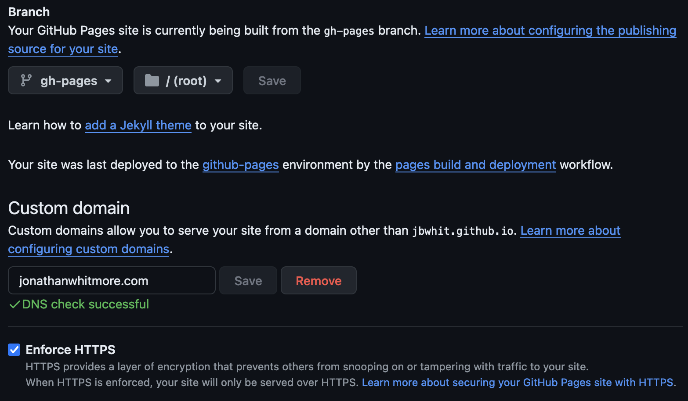

[Solved] Custom Domain Keeps Reverting to GitHub Pages
[Solved] Custom Domain Keeps Reverting on My GitHub Pages Site
The Setup
I used Quarto and nbdev to create my website and a blog on a custom URL.
The whole process went rather smoothly. I had my website up and running, and I changed my hosting to point to the right place. My website appeared, and the DNS checks on GitHub’s side all passed. I had my website on the custom URL and enforced HTTPS.
The Problem
Whenever I made an update to my website, however, my URL broke. The GitHub Pages page (github.io/jbwhit/…) worked, but the custom URL (jonathanwhitmore.com) no longer pointed to the right spot.
The Start of a Solution
When I first added my Custom Domain, GitHub helpfully created a CNAME (Canonical Name) file in the top-level directory of the repo on the gh-pages branch (if that’s what you’re using, and I was).

The Fix
Simply move the CNAME file from the top level directory and place it in the nbs directory, and then run nbdev_prepare and update as usual. I found that this completely solved the problem that occurred every single time I pushed a commit to GitHub.
# Directory structure of the GitHub website repo when using nbdev
├── ❌ CNAME
├── nbs
│ ├── _quarto.yml
│ ├── ✅ CNAME
│ ├── sidebar.yml
│ └── styles.css
├── README.md
├── settings.ini
├── setup.py- 1
-
❌ This CNAME file is created by GitHub and placed in the root directory of your git repo (one level above the
nbsdirectory that nbdev uses). The red X indicates this is not the correct location. - 2
-
nbdev uses the
nbsdirectory as the top-level of the website repo (this differs from what GitHub expects). - 3
-
✅ The correct place to put the CNAME file: under the
nbsdirectory. The green checkmark indicates this is the proper location.
The Why
Long story short: GitHub assumes that the git repository that you are turning into a website is using the top level directory as the directory for the website, and suggests the CNAME to be in the top level directory for that reason.
In contrast, Nbdev uses the nbs directory as the top-level of the website repo. This is why the fix is very simple – move the CNAME to the top-level directory of the website, which for nbdev projects is the nbs directory.